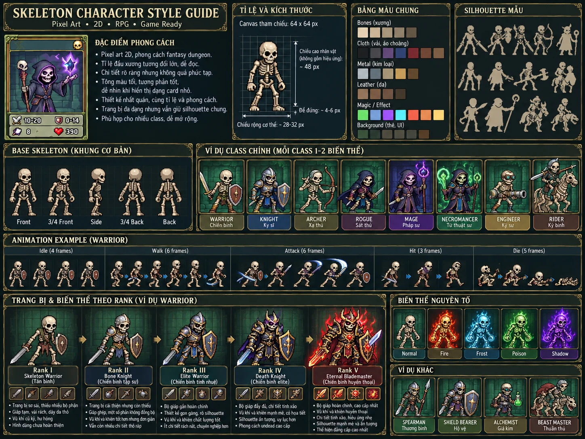
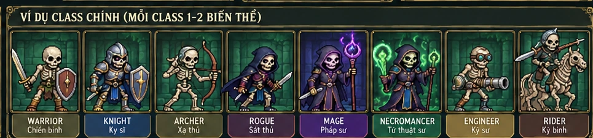
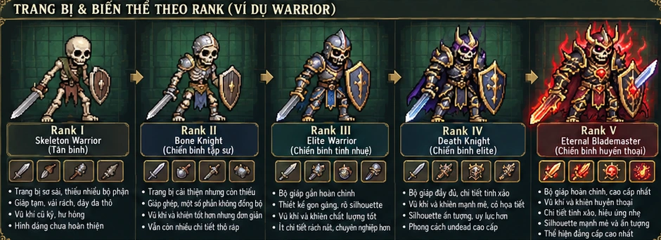
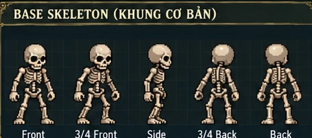
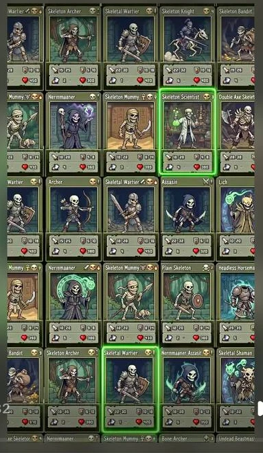

Skeleton Codex · Đi cảnh & Khiêu chiến thực tế
Điều khiển skeleton hình khối, chiến đấu với AI, nhận chiến tích chỉ sau khi thắng thật; sau đó quay skill, nâng Rank và chuyển nghề. Game dùng hình debug thay vì art.
PC: A/D hoặc ←/→ di chuyển · Space/W nhảy · J đánh thường · K / 1, 2, 3 dùng Active · Q Signature · Shift/L né · P tạm dừng. Kỹ năng đang lắp ở Skill Library được dùng trong trận, không phải tất cả skill đã sở hữu.
Build chiến đấu đang dùng
Đổi vũ khí và lắp skill ở mục 13 khi ngoài trận. Tier 0 ném đá bằng tay, không bắn cung.
Tiến trình & dữ liệu
Chuyển nghề một chiều và lưu tự động ở trình duyệt. Save V9 được nhập khi mở bản V10 lần đầu.
↓ Tải tài liệu triển khai V10 & giới hạn runtime (.md)
Đường chuyển nghề hiện tại
Nhật ký trận và tiến trình
Chuyển nghề có Tier — có lựa chọn, có cái giá
Tier 0 là điểm xuất phát
Skeleton Wanderer (Tier 0) chọn hướng nghề đầu tiên. Mỗi lần chuyển nghề phải đi qua cạnh tiến hóa hợp lệ, đạt yêu cầu Mastery/Skill và hoàn thành Trial phù hợp. Không thể nhảy thẳng lên nghề Tier cao chỉ nhờ đủ điểm.
Đường rẽ, độc đạo và kết thúc vĩnh viễn
Branch: một nghề dẫn tới nhiều lựa chọn. Linear: nghề chỉ có một hướng nâng cấp. Terminal: không có nghề kế tiếp, có thể đạt đỉnh sức mạnh riêng nhưng kết thúc chuỗi chuyển nghề.
Cây chuyển nghề tương tác
Nhấn một nghề để xem mô tả lối chơi platformer, đòn thường, combo, tiền nhiệm, nghề kế tiếp và điều kiện. Mũi tên thể hiện đường chuyển nghề, không đồng nghĩa mạnh hơn tuyệt đối. Một số tuyến kết thúc trước Tier cao nhất.
Chọn một nghề trong cây để xem chi tiết.
Tier nghề và sức mạnh không đồng nhất
Skeleton chưa nghề
Nghề cơ bản
Chuyên môn rõ
Đột biến lối chơi
Nghề cấp cao
Đỉnh chuỗi hiếm
Power Grade nội bộ Tier
D → C → B → A → S chỉ tiềm năng trong bối cảnh tương đương, không phải điểm số tuyệt đối. Nghề Tier 2 cấp A có thể mạnh hơn Tier 3 cấp C trong nhiệm vụ sở trường; điểm yếu, tổ đội và khắc chế vẫn quan trọng.
Điểm mạnh của nghề terminal thường nằm ở chuyên môn sâu hoặc khả năng đặc biệt, không cần có lối lên Tier 5.
Ba kết cục nghề
Open Path: còn nhiều cách phát triển.
Single Path: chỉ lên một nghề kế tiếp.
Terminal: không còn chuyển nghề; vẫn tăng cấp, nâng trang bị, max thêm skill để tăng Level và hoàn thiện Mastery nghề hiện tại.
KHÔNG thể quay lại nghề cũ. Khi chọn chuyển nghề, đường đã qua bị khóa vĩnh viễn đối với nhân vật đó. Nghề Terminal là điểm kết thúc thực sự; vẫn tăng cấp, nâng kỹ năng/trang bị nhưng không chuyển sang Job khác.
| Ví dụ cùng Tier 3 | Power | Đặc trưng | Tiến hóa |
|---|---|---|---|
| Bone Phalanx | B | Phòng thủ đội hình | Độc đạo lên Legion Marshal |
| Grave Marauder | A | Solo/loot mạnh, yếu khi thủ lâu | Terminal ở Tier 3 |
| Phantom Sniper | A | Đột kích tầm xa | Còn nhánh |
| Bone Tinkerer Prime | C | Kỹ thuật, cường hóa đồng đội | Tiếp tục phát triển |
Tám lĩnh vực nghề
Tám nhóm Mastery được giữ làm nguồn điều kiện chuyển nghề. Các nhánh và tuyến nghề trong cây V3 là ví dụ có liên kết rõ ràng, không phải danh sách cố định cần đi hết.
Mastery là điều kiện hỗ trợ, không thay thế chuyển nghề
Mastery 0–100 phát triển theo hành động phù hợp. Muốn tiến tới một Job phải đang ở nghề tiền nhiệm hợp lệ, đủ Mastery/Skill/Trial và trả tài nguyên nếu nghề yêu cầu.
Ví dụ Death Knight (Tier 4): xuất phát từ Bone Knight (Tier 2) vẫn phải chuyển qua Dread Knight (Tier 3), sau đó mới được chuyển thành Death Knight; có thể đặt lối vào thay thế qua Soul Cavalier nếu được thiết kế trong đồ thị. Đạt Necromancy 100 không bỏ qua các bước này.
Mastery nhóm nghề
Job Codex — mô tả từng nghề, Tier và Grade
Danh mục mẫu bao gồm nghề độc đạo, phân nhánh và kết thúc sớm. Chọn Job từ cây để thấy đường phát triển.
Chuyển nghề thật · Điều kiện & Trial
Mastery tăng qua chiến đấu; xem những nghề kế tiếp có nối trực tiếp trong cây. Demo kiểm tra Mastery và các skill bắt buộc max bậc 5; Trial phải chiến đấu thắng trước khi chuyển nghề thật. Mỗi lần chuyển nghề là vĩnh viễn, không quay lại nghề trước.
Chuyển nghề trực tiếp có thể xét
Quy tắc hệ thống đề xuất
Đi theo cạnh chuyển nghề
Chỉ chuyển sang Job nằm trong nextJobs của nghề đang xét, kiểm tra toàn bộ yêu cầu. Chuyển nghề là một chiều, chỉ từ nghề hiện tại; Job cũ lưu trong lịch sử nhưng không thể trang bị lại.
Nghề Terminal là quyết định vĩnh viễn
Terminal kết thúc hoàn toàn khả năng chuyển nghề. Nhân vật vẫn tăng Level bằng cách max thêm skill, nâng Mastery và hoàn thiện trang bị; không có điểm chỉ số nhận trực tiếp khi tăng Level. Cần cảnh báo rõ trước khi xác nhận chuyển vào Terminal.
Sức mạnh trong cùng Tier khác nhau
Dùng Power Grade dự kiến và vai trò, kèm chi phí cân bằng như độ hiếm, trang bị, Trial khó, ưu/nhược chiến thuật và chỉ số phụ thuộc đội hình.
Job ≠ Art Rank
Tier nghề là cấu trúc chuyển nghề; mức hoàn thiện đồ mặc và vũ khí là Equipment Visual Stage. Có thể liên hệ để trình diễn tiến bộ nhưng không bắt buộc đồng nhất.
2D Side-scrolling Action Platformer
Hệ nghề được cân bằng theo nhịp đánh, khoảng cách, tính cơ động và cửa sổ rủi ro thay vì ép mọi nhân vật dùng cùng tốc độ đòn thường. Đề xuất camera nhìn ngang, di chuyển trái/phải, nhảy, né, va chạm địch và kỹ năng có thể kết nối thành combo.
Chiến binh nặng
Đòn thường chậm (ví dụ 0,75–1,15 giây/chu kỳ), có hit-stop rõ, tầm ngắn-vừa, nhiều poise và knockback. Có lợi khi phá giáp, bất lợi nếu đánh hụt.
Kiếm sĩ / Rogue
Đòn thường nhanh (0,25–0,5 giây/chu kỳ), di chuyển linh hoạt, chuỗi 3 hit, có cancel theo cửa sổ xác định; sát thương từng hit thấp và dễ bị phản đòn khi tham.
Archer / Gunner
Nhịp bắn riêng: cung kéo dây và thả; nỏ/gun có thời gian nạp. Đổi lấy an toàn tầm xa bằng giới hạn di chuyển khi ngắm và tiêu hao tài nguyên.
Mage / Summoner / Engineer
Đòn thường có thể là đạn phép nhẹ, gọi bone wisp hoặc công cụ đánh gần. Sức mạnh chính ở đặt bẫy, khống chế, triệu hồi và giữ nhịp trận.
Hệ chỉ số Character / Combat
Đề xuất 6 chỉ số nền và các chỉ số chiến đấu dẫn xuất. Không dùng Power Grade làm công thức damage trực tiếp; mỗi Job có hệ số, kỹ năng, tầm đánh và utility riêng. Không cộng chỉ số khi lên Level: sáu chỉ số lõi được cải thiện vĩnh viễn bằng phần thưởng rank của kỹ năng (bậc 5 và đôi khi bậc 3).
Thông số chiến đấu dẫn xuất
| Nhóm | Thông số | Ý nghĩa |
|---|---|---|
| Sống sót | MaxHP, Armor, MagicResist, Poise | Chống sát thương, chống ngắt đòn |
| Sát thương | PhysicalPower, MagicPower, CritChance, CritDamage, ArmorBreak | Ảnh hưởng kỹ năng tùy Job |
| Hành động | MoveSpeed, AirControl, JumpHeight, DashDistance | Khác biệt điều khiển platformer |
| Chiêu thức | AttackStartup, AttackRecovery, CooldownRate, StatusPower | Không cộng đồng đều AttackSpeed vào mọi loại đòn |
| Tài nguyên | Stamina, Mana / Soul Energy (tùy Job) | Giới hạn né, phép, summon và đòn mạnh |
ElementAffinity[elementId] (cộng hưởng 0–100), ElementResist[elementId] (kháng hệ) và StatusResist[statusId] (kháng hiệu ứng). Đây là nhóm chỉ số riêng, không thay thế STR/DEX/VIT/INT/WIL/AGI. Phép thuật không nhất thiết có nguyên tố; khả năng hồi HP / phòng thủ / triệu hồi cũng có thể có hệ. Chi tiết và công thức: Skill Roles & Elements V6.Skeleton Wanderer — 5 bậc skill & chỉ số vĩnh viễn
Tier 0 chỉ có một nghề gốc: Wanderer, nhưng nhiều hướng học. Có thể học kỹ thuật kiếm, dao, khiên, ném đá bằng tay, pháp khí, bẫy và phép sơ cấp. Skill học được có 5 bậc; max skill tăng Level và chỉ số vĩnh viễn. Sang Skeleton Archer (Tier 1) mới tập dùng cung.
Chỉ số nhận từ kỹ năng — không cộng khi Level tăng
Mặc định sáu chỉ số nền bằng 5. Không cộng điểm bằng tay và không tự tăng chỉ số theo Level. Mỗi skill có thưởng cộng dồn khi đạt bậc thưởng; Level = số skill đạt bậc 5. Bảng dưới cập nhật theo kho skill Wanderer.
Tiềm năng nguyên tố Tier 0
Wanderer bắt đầu với Affinity = 0 ở mọi hệ (Lửa, Nước, Băng, Sét, Gió, Đất, Ánh sáng, Bóng tối, Tự nhiên). Skill phép Tier 0 là phép nhập môn, không buộc người chơi theo nghề pháp sư.
Nguyên tắc: Có thể luyện tối đa hai hướng hệ sơ cấp trong bản thử, mỗi hướng tối đa Affinity 10 trước T1; các phép cao hơn vẫn cần Tier và Affinity riêng. Phép lắp được phải có nguồn học hợp lệ (cuộn phép, NPC, nhiệm vụ). Không phải mọi kỹ năng nguyên tố tự mở sẵn.
Kháng hệ ban đầu = 0% làm mốc dữ liệu, không phải mặc định yếu với mọi hệ. Traits chủng tộc, trang bị và buff xử lý độc lập; Poison là trạng thái, không phải một nguyên tố.
5 hướng mở nghề Tier 1 — Skill bắt buộc max bậc 5
Có thể học và max nhiều bộ chiêu để mở nhiều nghề Tier 1; chỉ chọn một khi chuyển nghề. Bắt buộc đủ các skill bậc 5 theo nhánh, đồng thời đạt Mastery/Trial cũ. Tier 0 chỉ lắp 1 Active + 1 Passive; skill không cần lắp để giữ thưởng chỉ số.
Khiêu chiến · Vòng quay skill · Độ hiếm
Thắng đi cảnh và chiến đấu với một hoặc nhóm đối thủ để nhận Chiến tích. Dùng Chiến tích quay kỹ năng; skill chưa có sẽ học ở bậc 1, skill trùng tự đổi thành Điểm thông thạo để nâng skill bất kỳ đã sở hữu. Bản V10 có trận đấu điều khiển được và AI, không còn nút thắng trận miễn phí.
6 độ hiếm (khác với Tier nghề và bậc kỹ năng)
Độ hiếm quyết định thiết kế tính độc đáo, độ phức tạp, giá nâng và điểm nhận từ skill trùng; không tự động tăng Level hoặc số slot. Mọi màu vẫn có 5 bậc. Trắng/Lục là kỹ năng nền; không yêu cầu Vàng/Đỏ để mở Tier 1.
Mở màn khiêu chiến thật
Nhấn để mở màn chơi tương ứng; chỉ khi đánh bại AI và đến điểm kết thúc mới nhận thưởng.
Mỗi loại trận còn có thưởng thêm lần đầu: +30 / +60 / +90.
Vòng quay skill
Tier 0 chỉ có Trắng–Tím ở bộ dữ liệu mẫu. Vàng/Đỏ có thể gặp ở nghề Tier cao; V10 khóa pool theo Tier nghề hiện tại. Tỷ lệ bên dưới là tỷ lệ thực tế sau lọc, có thể khác xác suất gốc.
Thử thách nhập môn — nhận skill bắt buộc, không phụ thuộc may mắn
Mỗi thử thách phải chiến đấu thắng, chỉ nhận thưởng bảo đảm một lần. Nếu đã có skill thì nhận Điểm thông thạo tương ứng. Vẫn phải nâng chúng lên bậc 5 bằng điểm từ skill trùng để chuyển nghề.
↓ Tải tài liệu thiết kế gacha & 6 độ hiếm V9 (.md)
Tỷ lệ nền minh họa: Trắng 55% · Lục 25% · Lam 12% · Tím 5% · Vàng 2,5% · Đỏ 0,5%. Chỉ những màu có skill trong pool mới được quay; tỷ lệ còn lại phân bổ theo trọng số. Đảm bảo Lam+ ở lượt thứ 10, Tím+ ở lượt thứ 30 nếu pool có. Không sử dụng tiền thật.
Skill Library, Roles & Elements — Kho kỹ năng đa chiều
Skill Codex (mọi skill trong game) → Available (đủ điều kiện theo build) → Learned (nhân vật đã học) → Equipped (đưa vào số slot hạn chế). Một Tier có thể có nhiều skill; nghề chỉ quyết định điều kiện truy cập, không phải số kỹ năng tối đa có thể học. Mỗi skill có 5 bậc. Chỉ bậc 5 mới cộng +1 Level; chỉ số tăng theo mốc thưởng riêng của skill (thường bậc 5, một số skill mạnh thêm bậc 3).
Không khóa nghề; có thể cần Tier, vũ khí hoặc tài nguyên.
Giới hạn nhóm nghề, Mastery, loại vũ khí hoặc điều kiện cụ thể.
Chỉ một nghề được định nghĩa; sau chuyển nghề vẫn nhớ nhưng có thể không dùng.
Kỹ thuật giữ theo tuyến thăng nghề; production cần kiểm tra JobHistory.
Vai trò kỹ năng
Vai trò trả lời skill làm gì: Tấn công, Hồi phục, Phòng thủ, Cơ động, Khống chế, Hỗ trợ, Triệu hồi, Tiện ích. Một skill có thể có vai trò chính và vai trò phụ. Loại slot Active / Signature / Passive vẫn độc lập.
Bảng thuộc tính nguyên tố
Nguyên tố ≠ sát thương vật lý/phép. Một kỹ năng có thể gắn nhiều nguyên tố; kỹ năng trung tính vẫn có thể là phép. Nước và Băng là hai hệ riêng. Tài nguyên Soul và nhóm nghề Death không mặc định là nguyên tố.
Quan hệ trạng thái / phản ứng nguyên tố (đề xuất, chưa khóa damage)
Phản ứng chỉ kích hoạt từ các trạng thái/hit thực tế, có cooldown nội bộ, giảm hiệu quả lên boss và miễn nhiễm theo trạng thái. Không tự kích hoạt vô hạn.
↓ Tải thiết kế Skill Role + Element + Status V6 (.md)
Điều kiện Mastery dùng giá trị từ bảng “Mô phỏng chuyển nghề” ở phía trên. Skill bị khóa vẫn hiển thị để thấy sự đa dạng của kho. Tier là Tier tối thiểu; bộ lọc Vai trò bao gồm cả vai trò phụ. Phép có thể hồi HP / phòng thủ mà không gây damage.
damageType (Physical/Magical) và elementId (Neutral/Fire/...). Status là dữ liệu riêng, không thể chỉ nhìn icon nguyên tố để tự áp dụng Burn/Freeze. Kháng vật lý/phép và kháng hệ là hai lớp tách biệt; miễn nhiễm trạng thái là lớp thứ ba. Affinity tùy chọn làm điều kiện skill, không tự khóa mọi skill.Quan trọng: Thay đổi nghề trong panel này chỉ để xem profile mẫu độc lập, không phải tính năng chuyển nghề hoặc quay lại nghề cũ. Trong game, chuyển nghề vẫn vĩnh viễn và phải theo Job Graph. Bản demo chưa mô phỏng Trial/item/chi phí học và lịch sử đường đi; Lineage cần kiểm tra JobHistory thật khi triển khai runtime.
Skill Kit & Combo System
Giới hạn slot lắp — không phải giới hạn skill được học
6 hành động chiến đấu truy cập nhanh: 1 Normal Attack (combo thường 2–4 hit) + 3 Active Skills + 1 Signature/Ultimate + 1 Dodge/Mobility. Ngoài ra có 2 Passive Slots và các thao tác platformer chung (chạy, nhảy, tương tác).
Với mobile: chỉ nên có 3 nút skill nhỏ + 1 nút đặc trưng + Attack + Jump/Dodge; để ý diện tích màn hình và điều khiển một ngón.
Học skill theo Tier
T0: Normal + Jump + Dodge + 1 utility cơ bản.
T1: 1 Active đặc trưng.
T2: 2–3 Active, combo cơ bản.
T3: Mở Signature/Finisher, nhánh combo nâng cao.
T4–T5: Kỹ năng được biến đổi cơ chế, không tăng số nút vô hạn.
Nghề terminal có đầy đủ bộ kit tương xứng Tier và tiếp tục nâng cấp kỹ năng sau khi khóa chuyển nghề.
Combo ví dụ theo nghề
Cấu trúc combo trong runtime
Combo có điều kiện
Hit Confirm cho phép nối Normal → Skill; có thể đánh trên không; Launch → Air Follow-up → Ground Finisher. Dodge Cancel giới hạn chỉ ở đòn được phép. Mỗi chuyển trạng thái dùng thời điểm rõ ràng thay vì cho cancel mọi lúc.
Cân bằng combo
Combo dài tiêu hao Stamina/Mana, chịu scaling sát thương theo số hit, knockback và trọng lực. Boss có kháng hất tung, cooldown miễn khống chế, tránh bị khóa vô hạn.
Phong cách hình ảnh thống nhất

Visual DNA
- Pixel art 2D fantasy dungeon, sắc nét, các pixel cluster rõ.
- Tỷ lệ đầu hơi lớn, xương ngà, mắt sâu tối, khối gọn dễ đọc.
- Góc 3/4 nhìn sang phải; dáng toàn thân, không cắt chân.
- Tông olive / stone / steel / faded leather, magic glow tiết chế.
- Ánh sáng mát/trung tính; outline tối, không blur, không photo-real.
- Trang bị thể hiện vai trò; tay phải nắm đúng vũ khí, không trùng khớp hay chi thừa.
Sheet v2 được tạo bằng AI và chứa minh họa; text/kích thước trong ảnh không dùng như thông số kỹ thuật xác thực.
Minh họa vai trò

Equipment Visual Stage — từ phế liệu đến huyền thoại
Năm bước hoàn thiện trang bị (Visual Stage I–V) không bắt buộc là Tier nghề. Giữ nguyên quy chuẩn đồ thiếu → vá → sử dụng tốt → chế tác tinh xảo → di vật độc bản cho giáp, vũ khí và khiên.

| Rank | Giáp / trang phục | Vũ khí & khiên / off-hand | Cảm giác |
|---|---|---|---|
| I · Salvaged | Thiếu mảnh, đồ rách, đeo dây tạm | Kiếm sứt; khiên méo nứt hoặc ghép gỗ | Nhặt được gì dùng nấy |
| II · Patched | Vá lại; còn thiếu, lệch bên và khác chất liệu | Đã sửa nhưng còn vết gãy, thay cán hoặc ghép viền | Đang phát triển, chưa chuyên nghiệp |
| III · Functional | Đủ phần thiết yếu, chất liệu hợp lý | Vũ khí chắc chắn, khiên lành, còn dấu sử dụng | Thành thạo thực chiến |
| IV · Elite | Full bộ chế tác cho vai trò, hoa văn có chủ đích | Vũ khí/khiên đồng bộ, chi tiết nghề và hiệu ứng nhẹ | Chuyên nghiệp và uy lực |
| V · Legendary | Set độc bản, cấu trúc và dấu hiệu huyền thoại | Di vật độc nhất và off-hand tương ứng | Đỉnh cao nhưng vẫn rõ silhouette |
Chuẩn asset & sản xuất
Base Skeleton

Thống nhất skull, khung xương, ground line, góc nhìn và kích thước. Reference canvas 64×64 chỉ là mốc đề xuất, chưa phải độ phân giải sprite đã chốt.
Chuỗi làm asset
- Duyệt 1 skeleton base và silhouette.
- Duyệt 5 biến thể Rank từ cùng base.
- Tạo nhân vật độc lập trên nền alpha.
- Tách head / torso / limbs / equipment nếu cần rig.
- Kiểm tra anchor tay, vũ khí, chân và pivot.
- Tạo idle / walk / attack và kiểm tra Unity.
AI-generated sheet không tự động là sprite sheet hoặc rig đúng chuẩn.
Tham khảo screenshot gốc

Prompt tạo art nhất quán
Đính kèm style-guide V2 và ít nhất một nhân vật đã duyệt. JOB TIER và EQUIPMENT VISUAL STAGE là hai thông số khác nhau; tuyệt đối không mặc định nghề Tier cao luôn phải mặc full giáp.
Quyết định và các điểm đang mở
Đã xác nhận
- Tier 0 là nghề gốc; lên các Tier cao hơn bằng chuyển nghề.
- Có nghề phân nhánh, nghề chỉ có một hướng và nghề terminal / đường cụt.
- Hai nghề cùng Tier có thể mạnh yếu khác nhau.
- Art pixel dark fantasy; trang bị rách, thiếu → vá → lành → elite → huyền thoại.
Đề xuất cần duyệt
- Sáu Tier từ 0 đến 5 và danh sách các nghề hiện tại.
- Power Grade D–S, độ hiếm và điều kiện Trial chi tiết.
- Không quay lại nghề đã qua; chuyển nghề là vĩnh viễn, kể cả khi chọn terminal.
- Mastery 0–100, chi phí học skill và chỉ số cân bằng chi tiết. Giới hạn slot lắp đã được tách khỏi tổng skill học được.
35 nghề · 36 đường chuyển nghề · Việt / English
Bảng dưới dùng trực tiếp yêu cầu nghề, Mastery và cặp skill gate từ bản playable. Mọi cạnh đều bắt buộc 2 skill bậc 5 + Mastery + thắng Trial. Các nghề terminal không có cạnh ra.
| Nghề trước → Nghề mới | Tier / Power | Hai skill bắt buộc (Rank 5) | Mastery tối thiểu | Trial |
|---|
↓ Tải ghi chú cân bằng V12: gate mới, pool gacha theo nhánh, 147 skill · Tài liệu V11 gốc
Dữ liệu tên nghề/skill V11/V12 không làm thay đổi ID save V10; V12 thêm 43 skill, đổi gate của 15 nghề và giữ rank skill cũ. Đường chuyển nghề chỉ xuất hiện khi đúng nghề hiện tại; bảng tổng là Codex tra cứu, không cho phép chuyển nghề tắt.